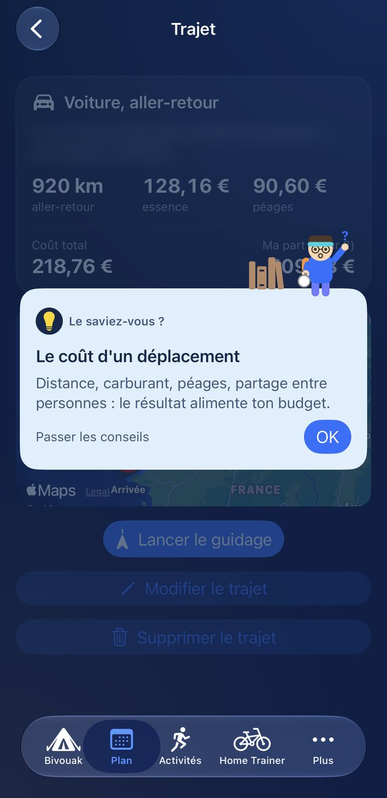
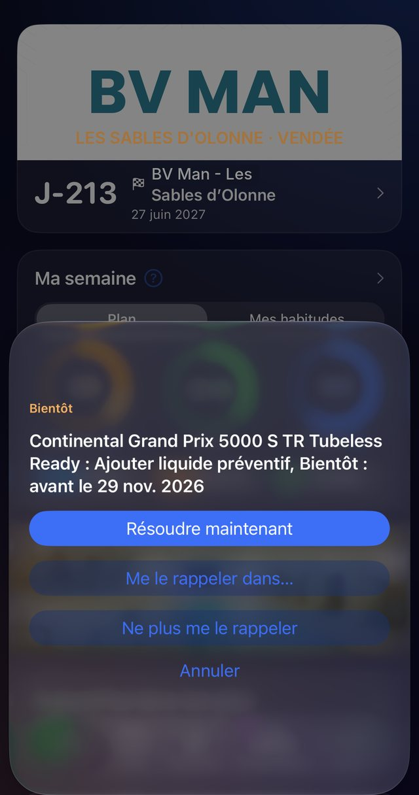

Les petits plus
Bivouak ne se contente pas d’afficher tes données : il te souffle de petits conseils et te rappelle ce qu’on oublie toujours, au bon moment.
Comment ça marche
Quand tu ouvres un écran pour la première fois, une petite carte « Le saviez-vous ? » t’explique à quoi il sert et te montre un geste utile. Tu peux la passer d’un tap, elle ne revient pas t’embêter.
À côté, des rappels s’affichent sur ton tableau de bord : un entretien à prévoir, un papier qui expire, une sauvegarde à faire. Orange quand ça approche, rouge quand c’est urgent. Un tap sur « Résoudre maintenant » t’amène au bon endroit.
Tu gardes la main : dans les réglages de Mon Bivouak, tu choisis quels messages s’affichent (rappels, conseils, souvenirs), et tu peux en faire taire un seul.
375 astuces sont cachées dans l’app. On ne les liste pas toutes ici : les découvrir au fil de l’eau, c’est la moitié du plaisir. Voici une poignée d’exemples, à titre d’illustration seulement.


💡 Des astuces, quelques exemples
- Pas envie de tout saisir ? « Créer mon vélo avec ses pièces et rappels » prépare chaîne, pneus, freins… avec leurs alertes d’entretien, à zéro kilomètre.
- Bibliothèque → Adresses favorites : ton magasin, ton club ou ton atelier avec adresse, site et catalogue PDF. Tu le retrouves ensuite dans l’achat d’un équipement.
- Dans ta bibliothèque, un geste suffit pour ajouter ta pièce d’identité, ton certificat médical, ta licence ou ton assurance, avec leur date de fin de validité.
- Renseigne le site web de ton club : il rejoint tes favoris et devient un raccourci sur ton tableau de bord.
- Une petite brique 🧱 sur une journée, c’est un brick : un enchaînement vélo puis course. Ouvre la séance pour les conseils de Bivouak sur la transition.
- Tu veux envoyer ton plan à ton entraîneur ou à ton club ? Le bouton d’export de l’écran Plan sort tout le plan, du début à la course, en PDF ou en CSV.
- Un équipement de ta liste au Père Noël passe dans ton garage et ton budget avec « Je l’ai acheté ! ».
🔔 Des rappels, quelques exemples
- Programme un rappel d’entretien (chaîne, pneus, chaussures) sur ton matériel : Bivouak te prévient à temps.
- Un rappel d’entretien peut ne dépendre que du temps : liquide préventif tous les 3 mois, même si tu n’as pas roulé.
- Connecte ton capteur ou ton home trainer en Bluetooth : Bivouak te propose de le créer dans ton équipement, avec un rappel de pile ou de batterie.
- Un rappel orange ou rouge ? Touche-le : « Résoudre maintenant » t’amène directement au bon endroit pour le régler.
- Un rappel te dérange ? Touche-le, puis réponds « Non, ne plus me le rappeler » : il disparaît jusqu’à ce que tu le réaffiches.
- Pense à ta sauvegarde : elle te protège si tu changes de téléphone ou si tu perds tes données.
Exemples choisis parmi 375. Les autres, tu les croiseras en utilisant l’app.